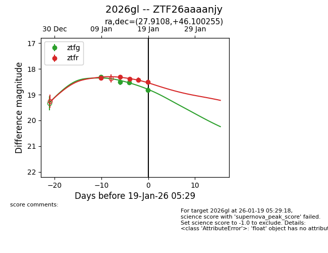
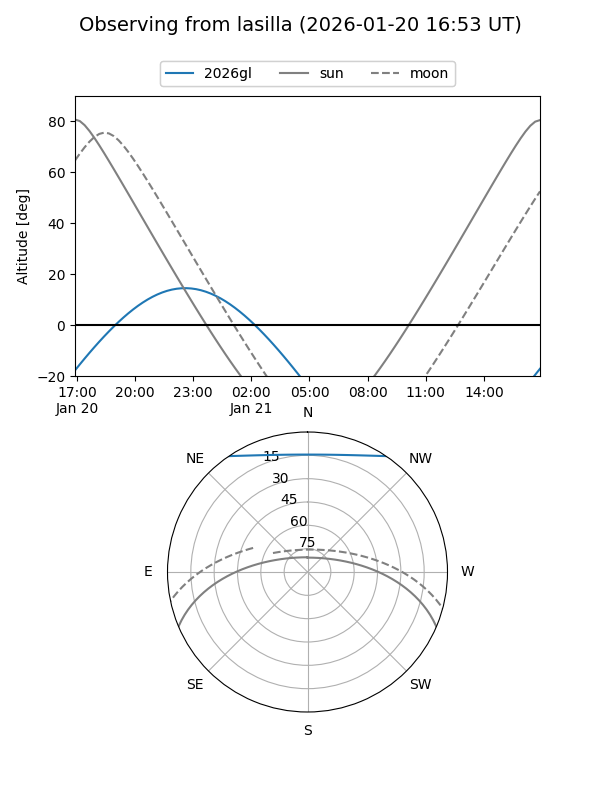
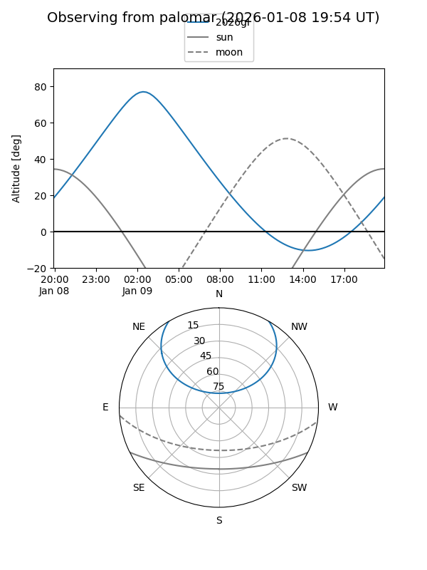
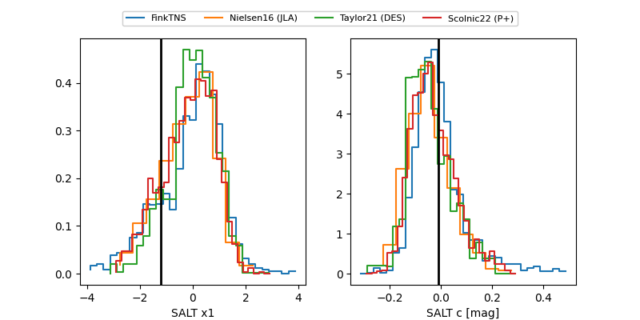

2026gl
Target 2026gl at 2026-01-23 07:31
Aliases and brokers:
FINK: link
Lasair: link
ALeRCE: link
TNS: link
YSE: link
alt names
ZTF26aaaanjy (ztf,fink_ztf)
2026gl (tns,yse)
Coordinates:
equatorial (ra, dec) = 27.9108,+46.10026
equatorial (HMS+DMS) = 01:51:38.59,+46:06:00.92
galactic (l, b) = (133.7020,-15.50869)
Flags:
Photometry:
last ztfg=18.93, ztfr=18.52
5 ztfg, 5 ztfr detections
Lightcurve

Visibility


Additional plots
